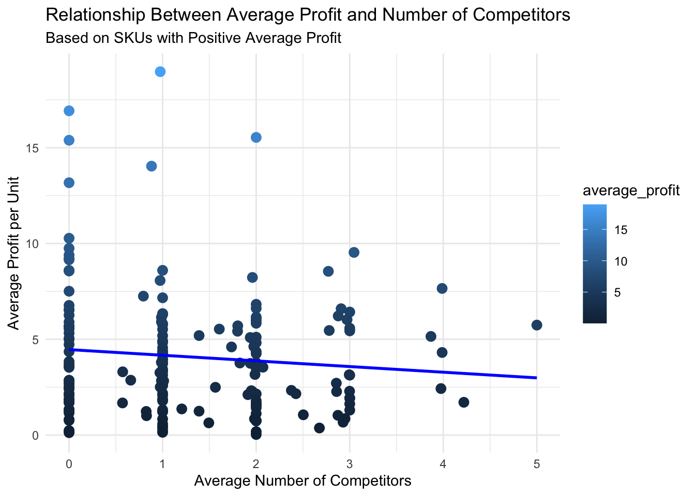

informs <- read.csv("2023 INFORMS BSS Data Challenge Dataset.csv", header=TRUE)Introduction
This project is based on the dataset provided for the INFORMS 2023 Data Challenge. INFORMS teamed up with Blue Summit Supplies, an online retailer based in Alabama, to tackle real-world challenges in setting the right prices for their products. The eCommerce market is fast-paced, with prices changing constantly. Quick and smart pricing decisions are essential for staying competitive and profitable. The Informs data challenge aims to use the company’s actual sales data to explore how pricing impacts profits, with the goal of helping the company make better, faster pricing decisions. This projects takes a different route. As a team, your task is to understand the dataset and prepare it for further analyses.
Programming Language: R
Deliverables: Quarto Document (.qmd) and HTML Knitted Document
Libraries: Any libraries you deem necessary
There are 8 tasks, each is worth 12.5 points.
Data Set Description
sku: This is the product ID, a unique identifier for each product.salesdate: This represents the date on which a particular product was sold.price: This is the price at which the product was sold on a given day.unitsordered: This variable shows the number of units of a product ordered on a particular day.sales: This represents the total revenue generated from the sale of a product on a given day (it is calculated as the product`s price times the number of units ordered).cogs: This stands for “Cost of Goods Sold”, which is the direct cost incurred by the company to produce or purchase the product.fba: This is the eCommerce fee associated with selling the product. It includes the costs of storage, packing, and shipping handled by Amazon.reffee: This is the eCommerce platform fee associated with selling the product (15% of sales).adspend: This represents the advertisement cost associated with the product.profit: This is the profit obtained from selling the product, calculated as sales minus the sum of cogs, fba, reffee, and adspend (profit = sales - cogs - fba - reffee - adspend).comp_x_price: This represents the price of a similar product sold by a competitor. Up to 5 competitors` price data are available for each product (67 items have O competitors, 65 items have 1 competitor, 56 items have 2 competitors, 28 items have 3 competitors, 9 items have 4 competitors, 2 items have 5 competitors).comp_data_min_price: This is the minimum price among all competitors for a similar product.comp_data_max_price: This is the maximum price among all competitors for a similar product.managed_fba_stock_level: This represents the available quantity of the product in stock.min_price: This is the minimum allowable selling price for the productmax_price: This is the maximum allowable selling price for the product.
Read the data in R
TASK 1:
In this task, you will be ensuring that all variables in the dataset informs are of the correct type. This is a crucial step in any data analysis project, as incorrect variable types can lead to misleading analyses and results.
Details:
Declare categorical variables as factors.
Convert the date variable to a date format.
Ensure that numerical variables are set as numerical data types.
Your R object,
informs, should have122801rows and20columns.Print the data structure below with
str(informs)function.
library(dplyr)
Attaching package: 'dplyr'The following objects are masked from 'package:stats':
filter, lagThe following objects are masked from 'package:base':
intersect, setdiff, setequal, unioninforms <- informs %>%
mutate(
sku = as.factor(sku),
salesdate = as.Date(salesdate, format="%Y-%m-%d"),
price = as.numeric(price),
unitsordered = as.numeric(unitsordered),
sales = as.numeric(sales),
cogs = as.numeric(cogs),
fba = as.numeric(fba),
reffee = as.numeric(reffee),
adspend = as.numeric(adspend),
profit = as.numeric(profit),
comp_1_price = as.numeric(comp_1_price),
comp_2_price = as.numeric(comp_2_price),
comp_3_price = as.numeric(comp_3_price),
comp_4_price = as.numeric(comp_4_price),
comp_5_price = as.numeric(comp_5_price),
comp_data_min_price = as.numeric(comp_data_min_price),
comp_data_max_price = as.numeric(comp_data_max_price),
managed_fba_stock_level = as.numeric(managed_fba_stock_level),
min_price = as.numeric(min_price),
max_price = as.numeric(max_price)
)
str(informs)'data.frame': 122801 obs. of 20 variables:
$ sku : Factor w/ 227 levels "Binder Dividers SKU 1",..: 61 61 61 61 61 61 61 61 61 61 ...
$ salesdate : Date, format: "2022-01-01" "2022-01-02" ...
$ price : num 29.5 30 29.7 29.8 29.8 ...
$ unitsordered : num 19 13 84 78 83 61 66 18 20 70 ...
$ sales : num 560 390 2494 2324 2473 ...
$ cogs : num 236 161 1042 968 1030 ...
$ fba : num 156 107 690 641 682 501 543 148 164 575 ...
$ reffee : num 84 58 374 349 371 273 290 81 90 314 ...
$ adspend : num 0 0 0 0 0 0 0 0 0 0 ...
$ profit : num 84 64 388 366 390 292 281 88 98 334 ...
$ comp_1_price : num 28.5 28.5 28.5 28.5 28.5 ...
$ comp_2_price : num 28 28 28 28 28 ...
$ comp_3_price : num 31 31 31 31 31 ...
$ comp_4_price : num NA NA NA NA NA NA NA NA NA NA ...
$ comp_5_price : num NA NA NA NA NA NA NA NA NA NA ...
$ comp_data_min_price : num 28 28 28 28 28 ...
$ comp_data_max_price : num 31 31 31 31 31 ...
$ managed_fba_stock_level: num NA NA NA NA NA NA NA NA NA NA ...
$ min_price : num 28 28 28 28 28 ...
$ max_price : num 35 35 35 35 35 ...TASK 2:
In this task, you are required to calculate the percentage of missing values for each variable in the informs dataset and display the results in a table. Understanding the extent of missing data is a crucial step in data analysis, as it can significantly impact the results.
Details:
- Your printed table should display the variable name,
variablein the first column and the percentage of missing values, calledPercent_Missing, in the second column. - The table should be sorted in descending order based on the percentage of missingness (
Percent_Missing). If two variables have the same percentage of missingness, then they should be sorted by their variable names (variable) in ascending alphabetical order. - Your code should print the table below
library(dplyr)
library(tidyr)
missing_data <- informs %>%
summarise(across(everything(), ~sum(is.na(.))/length(.)*100, .names = "Percent_Missing_{.col}")) %>%
pivot_longer(cols = starts_with("Percent_Missing_"),
names_to = "variable",
values_to = "Percent_Missing") %>%
mutate(variable = gsub("Percent_Missing_", "", variable)) %>%
arrange(desc(Percent_Missing), variable)
print(missing_data)# A tibble: 20 × 2
variable Percent_Missing
<chr> <dbl>
1 comp_5_price 98.6
2 comp_4_price 94.1
3 comp_3_price 83.1
4 comp_2_price 60.5
5 comp_1_price 35.9
6 comp_data_max_price 30.6
7 comp_data_min_price 30.6
8 managed_fba_stock_level 19.7
9 adspend 0
10 cogs 0
11 fba 0
12 max_price 0
13 min_price 0
14 price 0
15 profit 0
16 reffee 0
17 sales 0
18 salesdate 0
19 sku 0
20 unitsordered 0 TASK 3:
In this task, you are required to create a new column in the informs dataset called number_competitors. This column should contain the total number of competitors. In other words, it contains the total number of non-missing values for the competitor price variables: comp_1_price, comp_2_price, comp_3_price, comp_4_price, and comp_5_price.
Details:
The
number_competitorscolumn will have a value of0if there are no competitor data available for that particular row.If data from only three competitors is present in a given row, then
number_competitorswill have a value of 3.After completing this task, your
informsdata frame should consist of 122,801 rows and 21 columns
informs$number_competitors <- rowSums(!is.na(informs[, c("comp_1_price", "comp_2_price", "comp_3_price", "comp_4_price", "comp_5_price")]))TASK 4:
In this task, you are required to create two new columns in the informs dataset called
median_competitor_priceandprice_differences.This first column,
median_competitor_price, should contain the median price among competitors. In other words, it contains the median of non-missing values for the competitor price variables:comp_1_price,comp_2_price,comp_3_price,comp_4_price, andcomp_5_price. Themedian_competitor_pricecolumn will have a value ofNAif there are no competitor data available for that particular row.The second column,
price_differencesshould represent the difference between the company’s price (price) and the median competitor price,median_competitor_price, for each transaction (row). If there are no competitor data available for that particular row, setprice_differencestoNA.After completing this task, your informs data frame should consist of 122,801 rows and 23 columns.
library(dplyr)
library(tidyr)
informs <- informs %>%
rowwise() %>%
mutate(
median_competitor_price = median(c(comp_1_price, comp_2_price, comp_3_price, comp_4_price, comp_5_price), na.rm = TRUE),
price_differences = ifelse(is.na(median_competitor_price), NA, price - median_competitor_price)
)
head(informs)# A tibble: 6 × 23
# Rowwise:
sku salesdate price unitsordered sales cogs fba reffee adspend profit
<fct> <date> <dbl> <dbl> <dbl> <dbl> <dbl> <dbl> <dbl> <dbl>
1 Envelop… 2022-01-01 29.5 19 560 236 156 84 0 84
2 Envelop… 2022-01-02 30.0 13 390 161 107 58 0 64
3 Envelop… 2022-01-03 29.7 84 2494 1042 690 374 0 388
4 Envelop… 2022-01-04 29.8 78 2324 968 641 349 0 366
5 Envelop… 2022-01-05 29.8 83 2473 1030 682 371 0 390
6 Envelop… 2022-01-06 29.9 61 1823 757 501 273 0 292
# ℹ 13 more variables: comp_1_price <dbl>, comp_2_price <dbl>,
# comp_3_price <dbl>, comp_4_price <dbl>, comp_5_price <dbl>,
# comp_data_min_price <dbl>, comp_data_max_price <dbl>,
# managed_fba_stock_level <dbl>, min_price <dbl>, max_price <dbl>,
# number_competitors <dbl>, median_competitor_price <dbl>,
# price_differences <dbl>TASK 5:
In this task, your goal is to create an R object called average_profit_vs_competitors that will store the sku and the following two variables:
The average profit per unit for each
sku, calledaverage_profit. Theaverage_profitshould be calculated as \(\frac{profit}{unitsordered}\).The average number of competitors per
sku, calledaverage_number_competitors.Theaverage_number_competitorsfor eachskushould be calculated asmean(number_competitors)in R.
Details:
Compute the average profit for each
sku, labeling this new variable asaverage_profit.Double check your calculations to make sure you do not have
-Infforaverage_profitvalues. The issue of-Infmost likely arises whenunitsorderedis zero, as division by zero in R returns-Inf. Ifunitsorderedis zero for a given day andsku, you can temporarily set it toNAto avoid-Infinaverage_profitcalculations.Arrange these calculated average profits in descending order for easier interpretation.
After completing this task, your R object named
average_profit_vs_competitorsshould have exactly 227 rows and 3 columns:sku,average_profit, andaverage_number_competitors
# Load required library
library(dplyr)
average_profit_vs_competitors <- informs %>%
# Temporarily set unitsordered to NA where it's 0 to avoid -Inf in calculations
mutate(unitsordered = ifelse(unitsordered == 0, NA, unitsordered)) %>%
# Group data by sku
group_by(sku) %>%
# Calculate average profit per unit and average number of competitors
summarise(
average_profit = mean(profit / unitsordered, na.rm = TRUE),
average_number_competitors = mean(number_competitors, na.rm = TRUE)
) %>%
arrange(desc(average_profit))
# Print the result
print(average_profit_vs_competitors)# A tibble: 227 × 3
sku average_profit average_number_competitors
<fct> <dbl> <dbl>
1 Pocket Folders SKU 4 19.0 0.975
2 Classification Folders SKU 18 16.9 0
3 Pocket Folders SKU 5 15.5 2
4 Classification Folders SKU 19 15.4 0
5 Tape SKU 8 14.0 0.881
6 Classification Folders SKU 20 13.2 0
7 Tape SKU 6 10.3 0
8 File Folders SKU 43 9.75 0
9 Misc School Supplies SKU 6 9.54 3.05
10 Tape SKU 7 9.39 0
# ℹ 217 more rowsTASK 6:
In this task, you are required to create a scatter plot using the average_profit_vs_competitors dataset and interpret it. Your plot should display the relationship between average_profit and average_number_competitors, specifically for rows where average_profit is greater than zero. Additionally, include a linear regression line on the scatter plot to gauge the overall trend.
Details:
Generate a scatter plot to display
average_profiton the y-axis andaverage_number_competitorson the x-axis.Overlay a linear regression line on the scatter plot.
Filter the data to include only rows where
average_profitis greater than zero.Label your axis
Interpret your findings in one short paragraph.
library(ggplot2)
filtered_data <- average_profit_vs_competitors %>%
filter(average_profit > 0)
plot <- ggplot(filtered_data, aes(x = average_number_competitors, y = average_profit)) +
geom_point(aes(color = average_profit), size = 3) + # Scatter plot points
geom_smooth(method = "lm", se = FALSE, color = "blue") + # Linear regression line
labs(
title = "Relationship Between Average Profit and Number of Competitors",
x = "Average Number of Competitors",
y = "Average Profit per Unit",
subtitle = "Based on SKUs with Positive Average Profit"
) +
theme_minimal()
print(plot)`geom_smooth()` using formula = 'y ~ x'
TASK 7:
The total sales revenue of a firm is calculated as the product of the price per unit and the total quantity sold. The impact of a price increase on total sales depends on the corresponding decrease in the quantity sold. In a highly competitive market, even a small increase in price can lead to a significant drop in sales, which in turn can reduce both total sales and profits.
For this task, please complete the following steps:
Create a subset of the
informsdataset by removing rows that have no competitors. Name this new datasetinforms_reduced.Calculate the correlation between
priceandprofitfor cases whereprice_differences > 0andprice_differences <= 0. Print and interpret your findings.Calculate the correlation between
priceandunits_orderedfor cases whereprice_differences > 0andprice_differences <= 0. Print and interpret your findings.
library(dplyr)
informs_reduced <- informs %>%
filter(number_competitors > 0)
cor_price_profit_positive <- cor(informs_reduced %>%
filter(price_differences > 0) %>%
select(price, profit), use = "complete.obs")
cat("Correlation between price and profit (price_differences > 0):", cor_price_profit_positive, "\n")Correlation between price and profit (price_differences > 0): 1 0.2473491 0.2473491 1 cor_price_profit_nonpositive <- cor(informs_reduced %>%
filter(price_differences <= 0) %>%
select(price, profit), use = "complete.obs")
cat("Correlation between price and profit (price_differences <= 0):", cor_price_profit_nonpositive, "\n")Correlation between price and profit (price_differences <= 0): 1 0.3082064 0.3082064 1 cor_price_units_ordered_positive <- cor(informs_reduced %>%
filter(price_differences > 0) %>%
select(price, unitsordered), use = "complete.obs")
cat("Correlation between price and units_ordered (price_differences > 0):", cor_price_units_ordered_positive, "\n")Correlation between price and units_ordered (price_differences > 0): 1 -0.02049753 -0.02049753 1 cor_price_units_ordered_nonpositive <- cor(informs_reduced %>%
filter(price_differences <= 0) %>%
select(price, unitsordered), use = "complete.obs")
cat("Correlation between price and units_ordered (price_differences <= 0):", cor_price_units_ordered_nonpositive, "\n")Correlation between price and units_ordered (price_differences <= 0): 1 0.236388 0.236388 1 TASK 8 Answer:
Based on the correlations calculated in Task 7, we can derive the following insights:
Correlation between Price and Profit:
· When the company’s price is higher than the median competitor price (price_differences > 0), the correlation between price and profit is 0.2473.
· When the company’s price is equal to or lower than the median competitor price (price_differences <= 0), the correlation between price and profit is 0.3082.
Correlation between Price and Units Ordered:
· When the company’s price is higher than the median competitor price (price_differences > 0), the correlation between price and units ordered is -0.0205, indicating a fragile negative relationship.
· When the company’s price is equal to or lower than the median competitor price (price_differences <= 0), the correlation between price and units ordered is 0.2364.
Pricing Recommendation:
To increase profitability, the company should consider a strategic pricing approach that balances maintaining a competitive edge and maximizing profit margins.
1. Competitive Pricing: For products where the company’s price is already lower or equal to the competitors (price_differences <= 0), continue to monitor competitor prices closely. A slight price increase could lead to higher profits, as indicated by the positive correlation (0.3082) between price and profit in this scenario. However, be cautious to keep prices the same, as this could negatively impact the number of units ordered.
2. Value-Added Pricing: For products where the company’s price is higher than the competitors (price_differences > 0), consider enhancing the perceived value of the product. This could be through improved product quality, customer service, or additional features. The aim is to justify the higher price point to the customers, potentially leading to increased profits without necessarily reducing the number of units ordered, as indicated by the weak negative correlation (-0.0205) between price and units ordered in this scenario.
3. Promotions and Discounts: Occasionally offer promotions or discounts, especially on products with high competition, to attract customers and increase sales volume. This strategy is great if it can be particularly effective if the discounts lead to a price point that is competitive with or lower than the competitors.